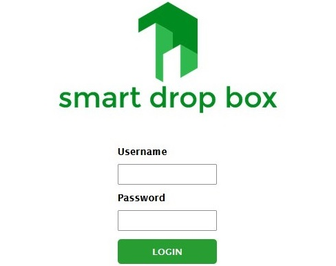

Smart Escalator Controlling Using PLN and IoT ESP32
This device is a development of an induction motor control system using a PLC in Escalator applications. The development carried out is by adding a monitoring device using an ESP32 microcontroller which is integrated into the Internet and Website. This monitoring device can detect when the phase voltage is lost and a voltage abnormality occurs (the voltage is too high or too low) at the input of the 3 phase induction motor. The microcontroller will automatically stop the motor when an abnormality is found in the 3 phase input and will be recorded on the monitoring website.
Electrical and Plummbing Installation
In this project, my friend and I were tasked with carrying out electrical and plumbing installations in a renovated building that will be used for a spa and salon located in Ubud. I was directly involved from the design of the drawings to the realization of the technical drawings. in electrical we install LED spotlights with dimmers, sockets, strip lights, speakers and intercoms, while in plumbing we are tasked with installing toilet drain lines, dirty water disposal, clean water and hot water, as well as installing supporting devices such as toilets, sinks , several water taps, and a shower.

Smart Drop Box
Smart Drop Box is a device developed to receive packages automatically when the package owner is not at home. The package owner only needs to register the receipt number for the package ordered in the smart drop box application. The courier who arrives only needs to enter the receipt number into the box via the keypad provided. If the receipt number entered is correct, the door will open automatically and the courier only needs to put the package in the box. After the package is placed in the box, the owner will receive a notification via the Telegram chatbot.
PLN Early Warming System
The PLN early warning system is a device developed from the Loss Voltage Detector device. This device has added a camera feature for monitoring the distribution transformer panel environment and a temperature sensor for monitoring the temperature of the transformer bushing, and added a notification feature to PLN officers now via the Telegram chatbot application.
Loss Voltage Detector on Three-Phase Power System Using SIM800C Communication
Loss Voltage Detector is a device made to detect voltage disturbances in the 3-phase electrical system in PLN distribution transformers. This device will automatically send a warning notification to PLN officers via short message when one or two phases are missing on a PLN distribution transformer.
.jpg)
Induction Motor Control System Using PLC "Schneider"
This project aims to develop a practical module for electrical engineering students at Udayana University where the development of 3-phase induction motor control uses a PLC and contactor. In this practical module, the PLC settings are made to control the starter-delta induction motor automatically and change the direction of rotation of the motor by pressing the push button.
.jpg)
Datalogging weather based wireless sensor network using LoRa
Build a data logging system to monitoring weather parameter like temperature, humidity, irradiance, luminocity, and rain intensity. This weather monitoring device consists of two nodes, there are the sensor node and the sink node. The sensor node sends data to the sink node wirelessly, the device used is LoRa SX1278.
Atmosphere Module
Atmosphere module is logging parameter on the atmosphere like temperature, humidity, barometric preasure, wind speed, wind direction, irradiance, luminosity, photosynthetically active radiation (PAR), and rain intensity.
Water Module
Water module is for logging parameter on the sea water like PH, turbidity, temperature, and salinity. Especially for sensor readings on the water module, it requires a mechatronic system using a servo to replace seawater with pure water in order to maintain the life time of the sensors itself.
Electrical Monitoring System and Otomatic Power Factor Correction
Currently building a monitoring system and otomatic correction power factor prototype. This monitoring system has a function to improve the power factor value that decreases due to the use of induction electrical loads, such as electric motors, AC, and others.
Three-Phase Monitoring System Based on Wireless Sensor Network Using LoRa Ra-02 SX1278
The monitoring system builded used arduino nano and ESP32 as controllers, LoRa SX1278 was used to wireless communication between one node with another nodes. In this system consists of two transmitter nodes and one receiver node. Monitoring results data will be stored in an online database and displayed on the website in the form of tables and graphs.
Three-Phase Monitoring System Based on Internet of Things
The three-phase monitoring system builded based on Internet of Things using local Wi-Fi network. The device installed in Pull Ruas Area at PT. Jasamarga Bali Tol.
.jpg)
.jpg)
.jpg){kind=link}
.jpg){kind=link}
.jpg){kind=link}
.jpg){kind=link}
.jpg){kind=link}
.jpg){kind=link}
.jpg){kind=link}
.jpg){kind=link}